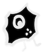
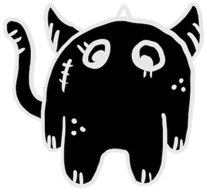
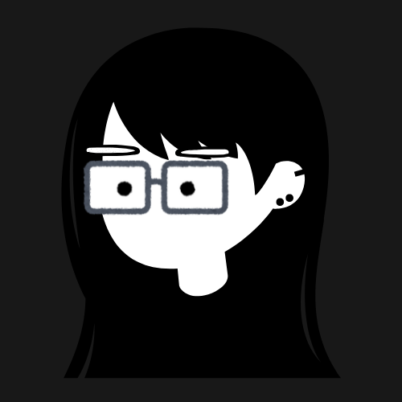

>HELLO, I'M JESS.
Knowledgable in design, research, & analytics.
Previously @ Maple Leaf Foods, Sushi Kui, etc.

>WILD UX MONSTERS HAVE APPEARED!
Fix the issues to save the user experience.
Projects
Maple Leaf Food's Inspection Form


Team: Jessica Ocampo & Jenani Yoganathan
Duration: 3 Months
Role:
Tools:
Overview
The project involved designing a
Problem Statement
Plant workers relied on paper-based forms, which were inefficient,
environmentally unfriendly, and challenging to manage. Maple
Leaf Foods wanted to
Process
Research: Conducted interviews and user testing with plant employees to understand their needs, workflows, and challenges with transitioning to digital forms.
Ideation: Brainstormed solutions collaboratively using Figma to create low-fidelity wireframes, which evolved into high-fidelity prototypes. Canva was used to source icons to enhance the visual design.
Design: Focused on creating simple yet visually appealing forms with key features such as dark mode and light mode. The high-fidelity designs were built in Figma.
Testing: Validated designs through usability testing with employees to ensure they were intuitive and functional, even for users with gloves or limited tech experience. Prototypes were then built in Microsoft Power Apps for further testing.
Solution
A simple, user-friendly interface.
Support for dark mode and light mode to cater to
user preferences and visual comfort.
Impact
Results: The prototype was handed off to the development team for implementation. It set the foundation for a scalable, reusable design system for other form-based applications across Maple Leaf Foods.
What was the outcome? Positioned the company to significantly reduce paper usage at plants, contributing to their "Path to Paperless" initiative.
Measurable metrics: While specific metrics were not mentioned, the project advanced Maple Leaf Foods’ sustainability and digital transformation goals.
Reflection
What Did I Learn?
How to work cross-functionally with various teams and stakeholders.
Best practices for designing tablet applications, especially for industrial use cases.
The importance of user-centric design in making technology accessible.
Challenges I faced and how I overcame them.
One challenge involved designing for users who wear gloves. The solution was to simplify touchpoints and conduct usability testing while users were wearing gloves.
Another challenge was ensuring the application appealed to older, less tech-savvy employees. To address this, simplicity was prioritized, and the application was extensively tested with this user group.
Developed proficiency in Figma for design and prototyping, gained experience with Microsoft Power Apps for low-fidelity interactive prototypes, and enhanced understanding of design standards for iPad/tablet applications.
CrossCultura


Team: Jessica Ocampo, Isabelle Cho, Jackie Zhang
Duration: 2 Months
Role:
Tools:
Short Video
Overview
The project focused on developing a Cultural Adjustment and Language Learning App (Crosscultura) to support international students in overcoming language barriers, cultural adjustment challenges, and feelings of isolation. The app was designed for international undergraduate students as the primary target audience, addressing their unique challenges. The goal was to create an augmented reality (AR) app that helps international students improve language skills, understand cultural nuances, and practice real-life scenarios. The app aimed to alleviate anxiety and mental health challenges, fostering better academic and social integration.
Problem Statement
International students often struggle with language barriers, adapting to cultural norms and feelings of isolation, which intensify stress and mental health challenges. These difficulties make it harder for students to practice academic and conversational language, navigate cultural etiquette, and feel supported in their new environments. As a result, their academic performance, well-being, and ability to integrate into their communities suffer, highlighting a critical need for tailored mental health support and adjustment tools to address these unique challenges.
Process
Research: Methods Used: Think-aloud protocol, System Usability Scale (SUS) surveys, semi-structured interviews, and user interaction analytics. Feedback emphasized accessibility, intuitive use, and engaging features.
Ideation: Brainstormed features like immersive scenarios (e.g., grocery shopping, lectures), NPC interactions, and gamification elements (XP points, levels).
Design: Tools: Figma and Styly for high-fidelity prototypes. Implemented Universal Design principles, ensuring accessibility (e.g., high-contrast modes, text-to-speech, and voice commands).
Testing: Validation Methods: User testing (4 participants) provided qualitative and quantitative insights. Issues like navigation, clarity of interface elements, and the lack of interactivity were identified and iterated upon.
Solution
The solution featured immersive AR scenarios simulating real-life settings, accessibility enhancements like voice commands and text-to-speech, and gamification elements such as XP rewards and progress tracking. A feedback system provided real-time insights, helping users practice language, adapt to cultural norms, reduce anxiety, and foster a sense of achievement.
Impact
Results: The app demonstrated improved usability, with SUS scores indicating it was user-friendly, achieving a mean ease-of-use score of 3.75. Users provided positive feedback, praising features such as transcripts, adjustable audio speeds, and XP rewards for supporting mental health and enhancing engagement. Additionally, the simulated environments helped reduce anxiety by making learning less intimidating.
What was the outcome? Users appreciated the app’s immersive and gamified approach, encouraging frequent use. Participants suggested the potential for increased student confidence and improved academic/social adjustment.
Measurable metrics: Average SUS score: 74 (indicative of good usability). Reduced perceived complexity: Low complexity score (mean 1.5).
Reflection
What Did I Learn?
The project highlighted the importance of user-centered design and the value of continuous iteration based on feedback. Incorporating accessibility and inclusivity was shown to enhance usability and increase user satisfaction. Additionally, user testing proved invaluable for uncovering hidden pain points and identifying areas for improvement.
Challenges I faced and how I overcame them.
One challenge was ensuring intuitive navigation and interactivity within the app. This was addressed by adding headers, improving button clarity, and enhancing navigation paths. Another challenge involved balancing immersion and simplicity, which was resolved by streamlining unnecessary features, such as removing confusing visualizers.
The project enhanced proficiency in prototyping tools like Figma and Styly. It also developed skills in conducting user research and analyzing both qualitative and quantitative data. Additionally, it emphasized applying Universal Design principles to ensure accessibility for all users.
Moodle


Duration: [Project timeline, e.g., 3 months]
Role:
Tools:
Overview
What was the project about? Who was it for (client or organization)? What was the goal? Problem Statement Define the problem you aimed to solve.
What challenges did the users face? Why was this a problem for the client/business? Process Outline your approach and methods.
Research: What methods did you use (e.g., user interviews, surveys)?
Ideation: How did you brainstorm solutions?
Design: What tools and techniques helped bring your ideas to life?
Testing: How did you validate your designs?
Solution
What features or design elements were key? How did it address the problem? Impact Highlight the results. What was the outcome? (e.g., increased user engagement, higher conversion rates) Any measurable metrics?
Reflection
What did you learn from this project?
Challenges faced and how you overcame them.
Skills Gained:
Sushi Kui's Menu
Duration: [Project timeline, e.g., 3 months]
Role:
Tools:
Overview
What was the project about? Who was it for (client or organization)? What was the goal? Problem Statement Define the problem you aimed to solve.
What challenges did the users face? Why was this a problem for the client/business? Process Outline your approach and methods.
Research: What methods did you use (e.g., user interviews, surveys)?
Ideation: How did you brainstorm solutions?
Design: What tools and techniques helped bring your ideas to life?
Testing: How did you validate your designs?
Solution
What features or design elements were key? How did it address the problem? Impact Highlight the results. What was the outcome? (e.g., increased user engagement, higher conversion rates) Any measurable metrics?
Reflection
What did you learn from this project?
Challenges faced and how you overcame them.
Skills Gained:
XR Speculative Design
Duration: [Project timeline, e.g., 3 months]
Role:
Tools:
Overview
What was the project about? Who was it for (client or organization)? What was the goal? Problem Statement Define the problem you aimed to solve.
What challenges did the users face? Why was this a problem for the client/business? Process Outline your approach and methods.
Research: What methods did you use (e.g., user interviews, surveys)?
Ideation: How did you brainstorm solutions?
Design: What tools and techniques helped bring your ideas to life?
Testing: How did you validate your designs?
Solution
What features or design elements were key? How did it address the problem? Impact Highlight the results. What was the outcome? (e.g., increased user engagement, higher conversion rates) Any measurable metrics?
Reflection
What did you learn from this project?
Challenges faced and how you overcame them.
Skills Gained:
About Me
Hi! I'm Jessica,
Hobbies
Interests
Connect
Let's Work Together!
Let's get in touch! You can reach me through email or social media.
My Resume
Here is a summary of my